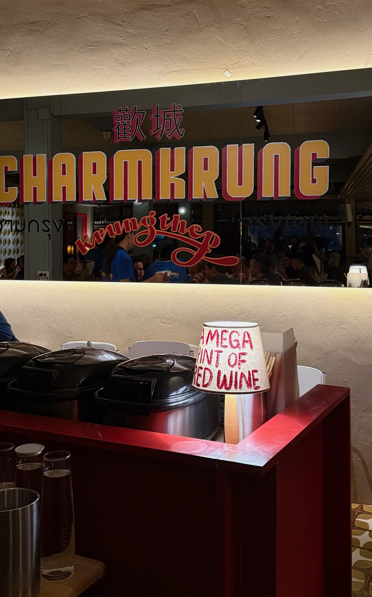
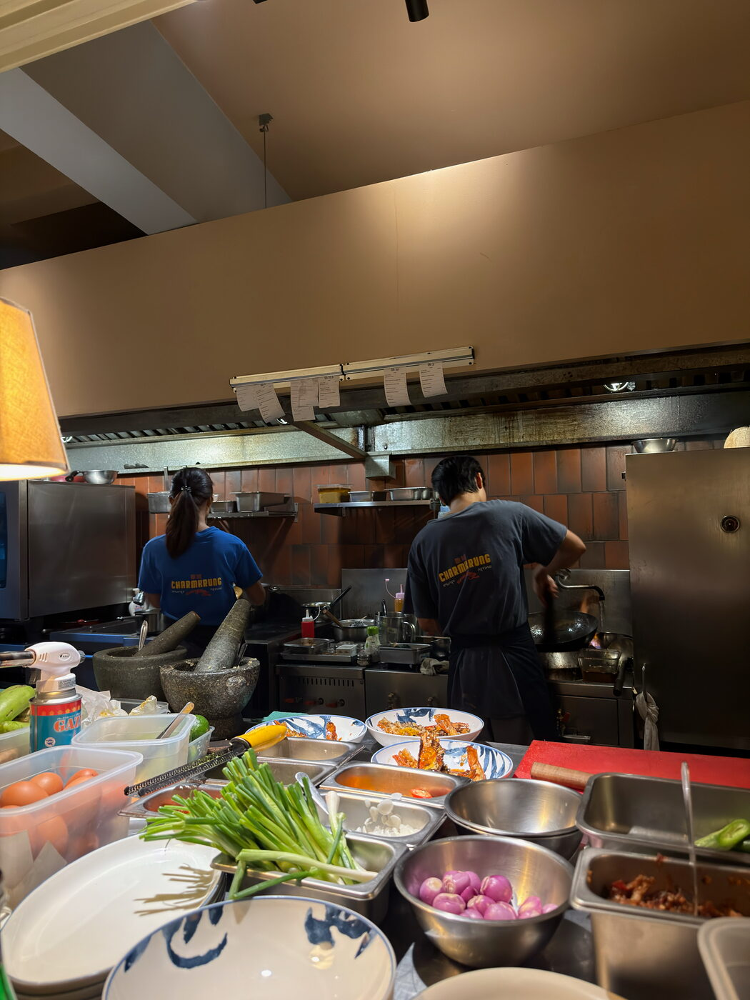
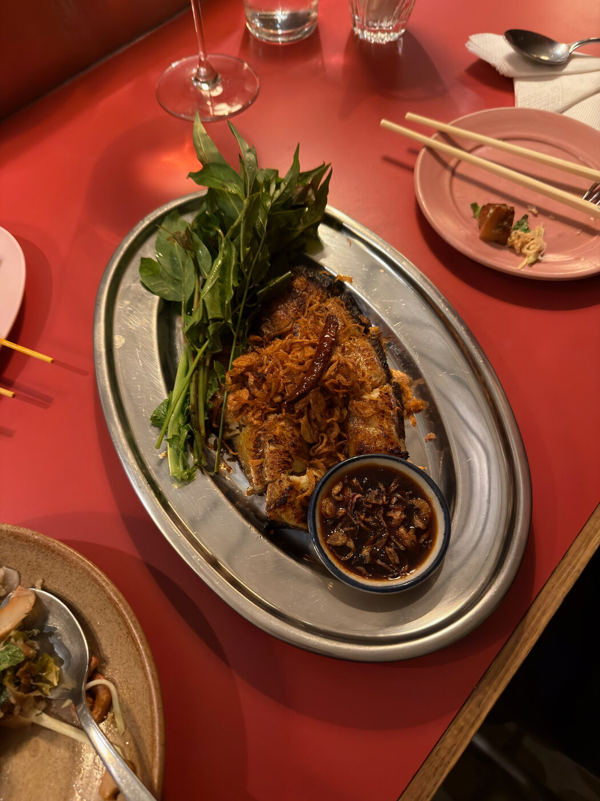
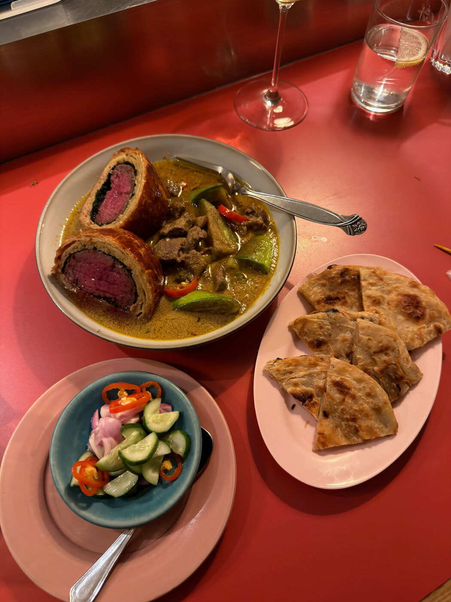

Banquet
The APSys 2026 banquet takes place on the evening of Day 1, Thursday, September 17, at Charmkrung, a restaurant on Charoenkrung Road in Talat Noi — one of the oldest neighbourhoods in Bangkok, on the river side of the old town.
We will travel there together as a group, by Skytrain, with a short sightseeing walk through the old town on the way. There is no need to find your own way: just be in the hotel lobby at the end of the Day 1 program.
| Restaurant | Charmkrung |
|---|---|
| Address | 839 Charoenkrung Road, 6th Floor Talat Noi, Samphanthawong Bangkok 10100, Thailand |
| Date | Thursday, September 17, 2026 after the Day 1 program |
| Meeting Point | Lobby of the conference hotel |
| Getting There | Together as a group, by Skytrain. Tickets are handed out by the volunteers as we set off. |
| Ticket | Included with the Full Conference package — see Registration for guest tickets |
| Links | Open in Google Maps |

The evening, step by step
-
Gather in the hotel lobbyThe Day 1 program ends at 4:30 PM. We will meet in the lobby of the conference hotel shortly afterwards — the exact departure time will be announced at the workshop.
-
Collect your Skytrain ticketVolunteers hand out the transportation tickets right as we set off, so please stay with the group until you have yours.
-
Skytrain to the old townWe take the BTS Skytrain together from the station near the hotel towards the old town, on the Chao Phraya river side of the city.
-
A short sightseeing walkFrom the station we continue on foot for a short guided walk through the old town before dinner. Comfortable shoes are a good idea, and September evenings in Bangkok are warm and humid — bring water and, if the forecast calls for it, a compact umbrella.
-
Dinner at CharmkrungThe walk ends at the restaurant, on the sixth floor at 839 Charoenkrung Road, where dinner is served as a shared meal.
About the restaurant
Charmkrung cooks contemporary Thai food from an open kitchen, served family-style on its signature red tables. Dishes are meant for sharing, so plan on tasting your way across the table.



Dietary requirements are collected during registration. If yours have changed since you registered, please let the organizers know so we can pass it on to the restaurant.